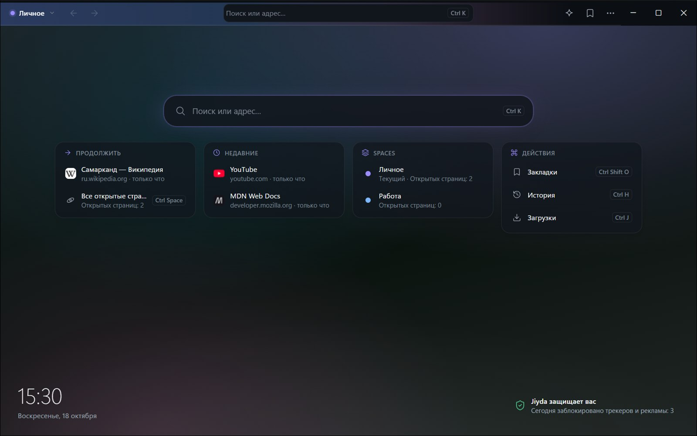

Интернет — спокойнее.
Jiyda — тихий браузер для Windows. Приватный по умолчанию, помогает сосредоточиться и не мешает, когда вы просто читаете.

Меньше браузера — больше интернета.
Никакой полосы вкладок, которая требует внимания. Страницы, контексты и инструменты появляются, когда вы их зовёте, и уходят, когда не нужны.
Spaces
Отдельные контексты для работы, учёбы и дома. У каждого Space свои страницы, куки и логины.
Orbit
Все открытые страницы, сгруппированные по смыслу. Нужная находится за секунду, без перебора вкладок.
Later
Отложите страницу, не закрывая её. Разгрузите голову сейчас — вернитесь, когда будете готовы.
Split View
Две страницы рядом в одном окне: читать и писать, сравнивать, делать заметки.
Командная палитра
Ctrl+K — страницы, история, закладки и все команды в одном поле поиска.
Защита встроена
Известные трекеры и реклама блокируются сразу. Сайты спрашивают, прежде чем включить камеру, микрофон или узнать местоположение.
Переезд за минуту
Закладки и история из Chrome или Edge переносятся в пару кликов. В старом браузере ничего не удаляется.
«Отменить» вместо «Вы уверены?»
Случайно закрыли страницу или удалили закладку? Нажмите «Отменить». А после сбоя все страницы на месте.
Ваш интернет — только ваш.
В Jiyda нет аккаунта, рекламы и аналитики. История, закладки и открытые страницы хранятся на вашем компьютере — и больше нигде.
Jiyda не собирает
- сайты, которые вы открываете, и историю
- поисковые запросы и то, что вы печатаете
- содержимое страниц, куки и пароли
- статистику использования и отчёты о сбоях
Jiyda подключается только к
- сайтам, которые вы открываете, и вашему поисковику
- GitHub — проверить и скачать обновления (можно выключить)
- Anthropic — только если вы подключили Ask Jiyda своим ключом
Страницы в Jiyda показывает Microsoft WebView2 — тот же движок, что у Microsoft Edge. Что это значит, — в политике конфиденциальности.
Сделано в Узбекистане.
Jiyda говорит на узбекском, русском и английском. Он бесплатный и пока молодой: мы ищем первых людей, которые попробуют его и расскажут, что исправить.
Скачать Jiyda для Windows